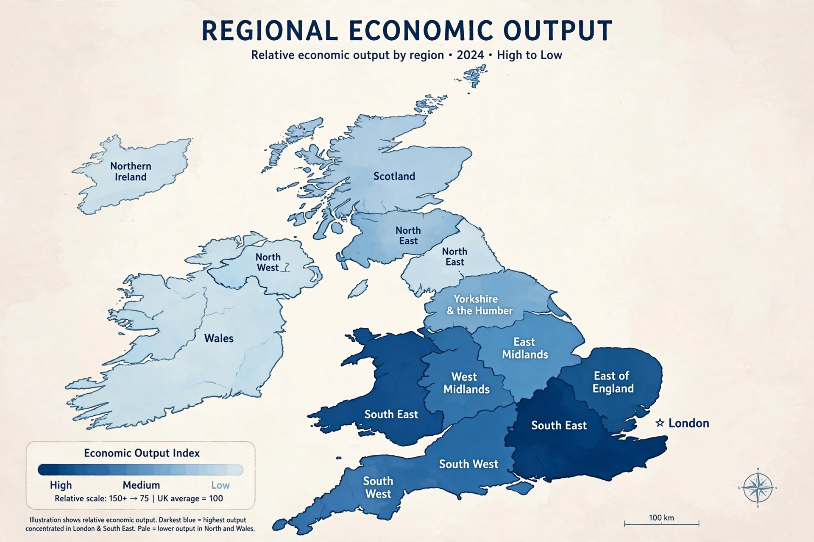

Regional inequality in the United Kingdom

Regional inequality in the United Kingdom refers to the disparities in income, productivity, health, education and opportunity between the regions and nations of the UK. The country is frequently described as one of the most regionally unequal large economies in the developed world, with London and the South East substantially outperforming much of the North of England, Wales, Scotland and Northern Ireland on measures such as gross value added (GVA) per head.
Measures
On Office for National Statistics figures, London's GVA per head is roughly double the UK average and around three times that of the lowest-performing regions. Productivity (output per hour worked) shows a similar pattern. Inequality also appears in life expectancy — gaps of more than a decade in healthy life expectancy between the most and least deprived areas — in educational attainment, transport investment per head, and access to high-skilled employment.
Causes
Historians and economists cite deindustrialisation after the 1970s, which hit coal, steel, shipbuilding and textile regions; the concentration of finance and professional services in London; agglomeration effects drawing graduates to the capital; centralised governance, with England among the most centralised states in the OECD; and historically lower per-capita public investment in transport outside London and the South East.
The North–South divide
The disparities are often summarised as a North–South divide, though the picture is more complex: there are deprived areas within London and prosperous areas in the North, and parts of the rural South West and coastal England also record low incomes. The divide has featured in electoral politics, including debate over "left behind" towns after the 2016 Brexit referendum.
Policy responses
Successive governments have launched regional policies: regional development agencies (1999–2012), the Northern Powerhouse agenda, city-region devolution deals with elected metro mayors, and the "levelling up" programme announced by the Johnson government, with a 2022 white paper setting missions on living standards, transport, education and health. Critics argue funding has been small relative to the gap, short-term, and competitively allocated. The Barnett formula, governing funding for the devolved nations, is a further recurring subject of debate.